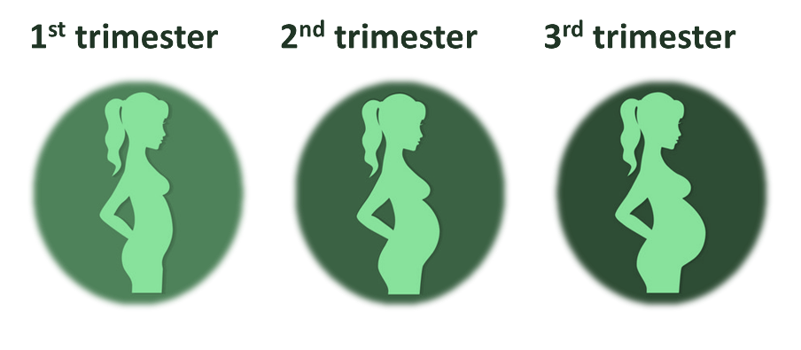
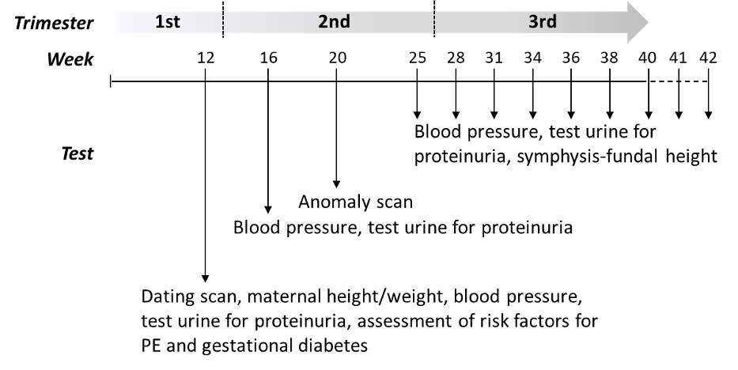

(Press ? for help, Esc for over view n and p for next and previous slide)
Mum is pregnant!
Mum has a new baby in her belly and you will have a little brother or sister to play with.
The baby will grow in mum’s belly for 9 months, which are divided into three 3-month periods, called TRIMESTERS.

First trimester (3-12 weeks)
Mum might feel unwell some days, but it’s all normal: she is getting used to the new baby growing inside her.
It is very important that mum attends all the recommended antenatal visits

Test for mum and the baby
Mum’s belly will be measured to check that the baby is growing as expected.
Mum’s blood pressure will be measured to make sure she doesn’t feel dizzy and unwell.
Mum’s pee will be tested to check that there are no dangerous substances in there.
A special machine, called Ultrasound Scanner, will be used to see the baby inside mum’s belly and to measure his/her size.
Second trimester (13-27 weeks)
Mum’s belly is starting to grow, and the baby is starting to move inside her belly.
If you put your hand on mum’s belly, you might start feeling some kicks and punches in there!
It’s important to pay attention to the baby’s movements. if they decrease or change, mum should get in touch with the midwives because the baby might be unwell.
Third trimester (28-40 weeks)
Now mum’s belly is quite big as the baby has been growing for several months.
Mum might feel tired sometimes because she carries around this extra weight.
Not too long to wait now: the new baby will be with the family soon!
Good nutrition and habits (1/2)
Mum should have a healthy diet to support herself and the baby.
Food should be prepared in a clean environment; vegetables and fruits should be washed carefully; meat, fish and eggs should be cooked well.
Midwife/doctor’s recommendations should be followed regarding supplements in pregnancy.
Mum should keep up her normal daily physical activity or exercise (sport, running, yoga, dancing, walking) for as long as she feels comfortable, but she should not exhaust herself: exercise is not dangerous for the baby!
Good nutrition and habits (2/2)
She should eat a variety of different foods every day to provide the right balance of nutrients that she and the baby need, including:
at least 5 portions of a variety of fruit and vegetables.
starchy foods (bread, potatoes, breakfast cereals, rice, pasta, noodles, oats) as they are an important source of energy.
dairy foods (milk, cheese and yoghurt) as they contain calcium and other important nutrients.
What food and habits to avoid during pregnancy
Mum should avoid foods that are high in fat, sugar or both (all spreading fats such as butter, oils, salad dressings, cream, chocolate and sweets, crisps, fizzy drinks)
She shouldn’t eat raw fish (such as in sushi)
She should avoid drinking coffee and alcohol, smoking and using illicit drugs for the sake of her own and the baby’s health